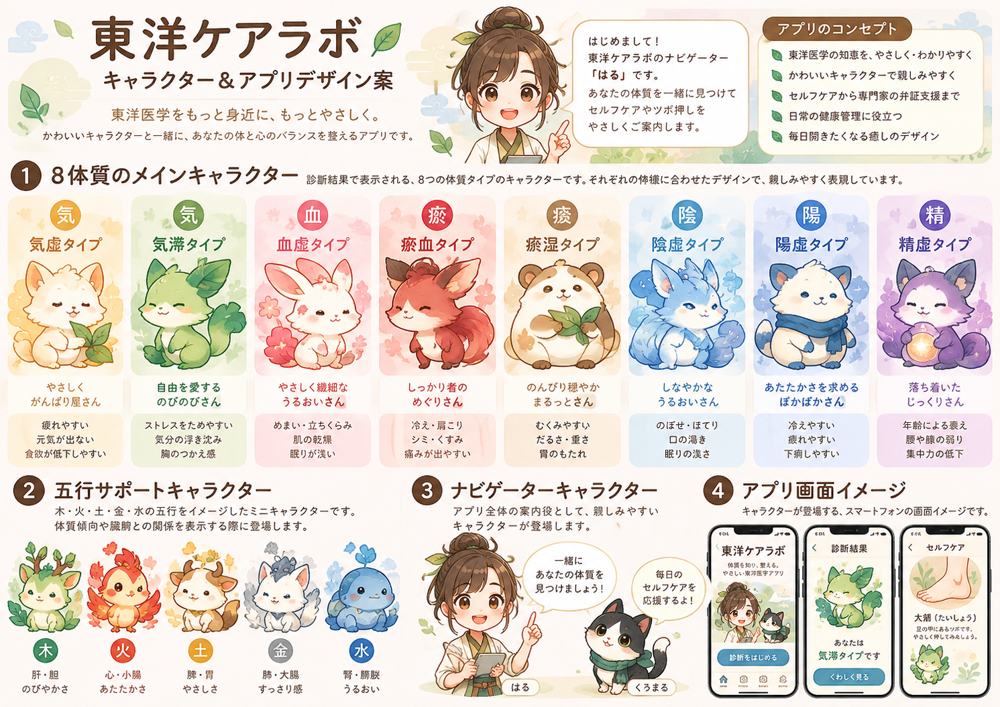

東洋医学を、毎日の暮らしに。
いまのあなたの
体質傾向を知る
25の質問（体質16問＋寒熱・虚実の参考4問＋五行5問）から、東洋医学の考え方に基づく体質の傾向を整理します。ツボ押しや生活のヒントも紹介します。
これは医学的な診断ではありません。急な症状、強い痛み、息苦しさ、意識の異常などがある場合は、このチェックを使わず医療機関へ相談してください。

利用モード
セルフケアと体質傾向をやさしく紹介します。
8つの体質キャラクター
所要時間の目安：3〜5分。回答は端末内で計算し、サーバーに保存しません。
アプリへのご意見
この公開先（GitHub Pages）にはフォームの保存機能がありません。送信できたように見せないため、現在はフォームを停止しています。個人情報や症状は入力しないでください。